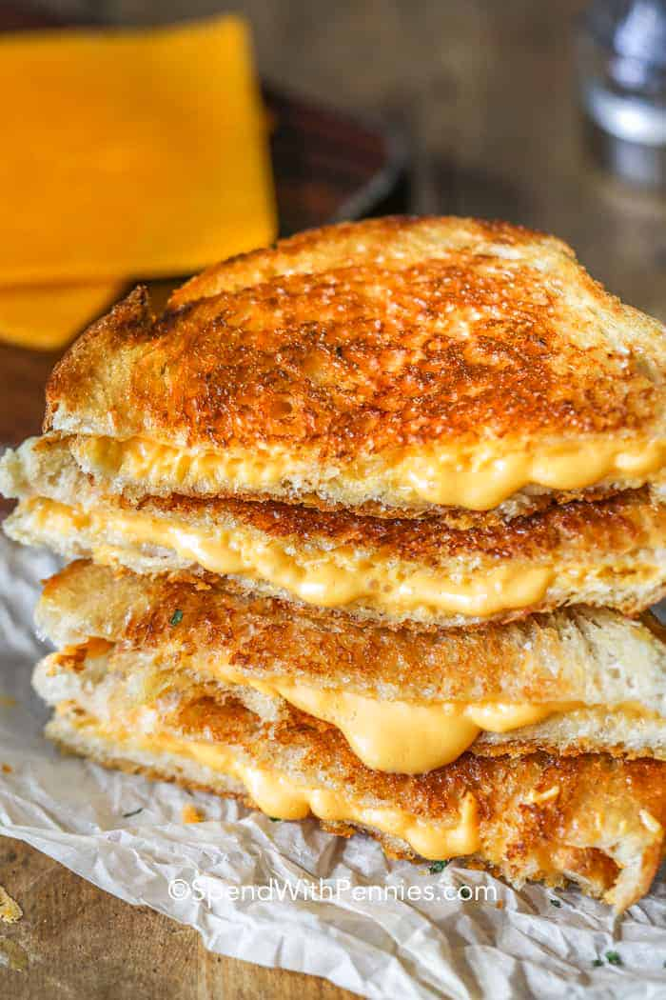

Grilled Cheese

Description
This grilled cheese recipe is meant to knock your socks off!.. or at least taste really good
and make your day just a bit better.
This is quite the simple recipe and the reason for that is because if we start adding too much to this recipe,
then it no longer a grilled cheese and it is now a melt, and we don't want that.
Nutrition Facts
Cal: 490, Carbs: 25g, Protein: 20g, Fat: 33g
Ingredients
- 4 slices white bread or sour dough
- 2 tablespoons mayonnaise
- 4 ounces cheddar cheese or American cheese
- 2 tablespoons shredded cheddar optional
Steps
- Preheat a small skillet over low heat.
- Spread mayonnaise over one side of each piece of bread and place mayonnaise side down in the skillet.
- Top with cheddar cheese slices, black pepper to taste and remaining slice of bread, mayonnaise side out.
- Grill until golden, about 4-5 minutes. Flip and grill the other side until golden.
- Optional: Just before serving, add the shredded cheddar directly to the outside of the sandwich and grill an additional minute or so until it gets crispy.